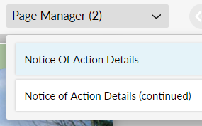

To navigate to the first, previous, next, or last page, use the page navigation buttons in the upper-right corner of Empower Editor.
Page navigation buttons
To navigate directly to a page in the document by name, use the Page Manager below the page navigation buttons. The Page Manager displays each page in the document, as well as any PDFs added to the document (if your Empower document allows adding PDFs).
Page Manager

Tip: You can press ALT + SHIFT + P on your keyboard to open the Page Manager, and then you can use the up and down arrow buttons to navigate between the pages of your Empower document.
Keep in mind that a "page" in the Empower document can represent multiple printed pages when the content that the page includes is longer than a single printed page. Each letter, form, or other document might be a separate page in the overall Empower document and might include multiple printed pages. For example, in the previous image, "LandingPage" might be a single interview page that allows you to configure the document, and "HealthAgentLetterPage" might be a letter that spans multiple printed pages.